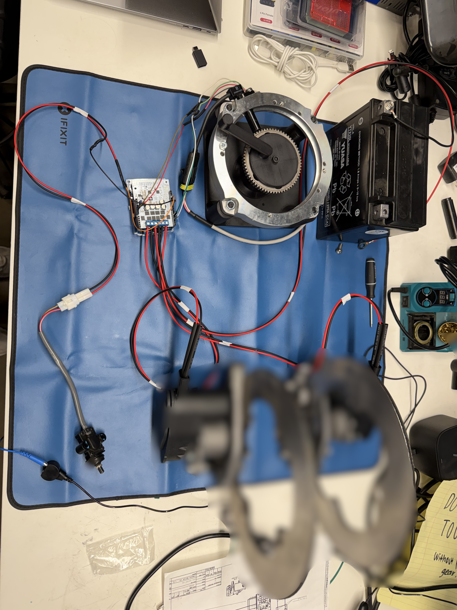
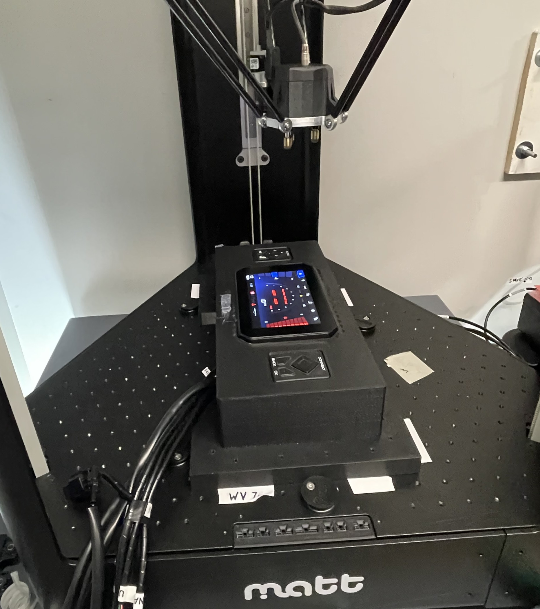
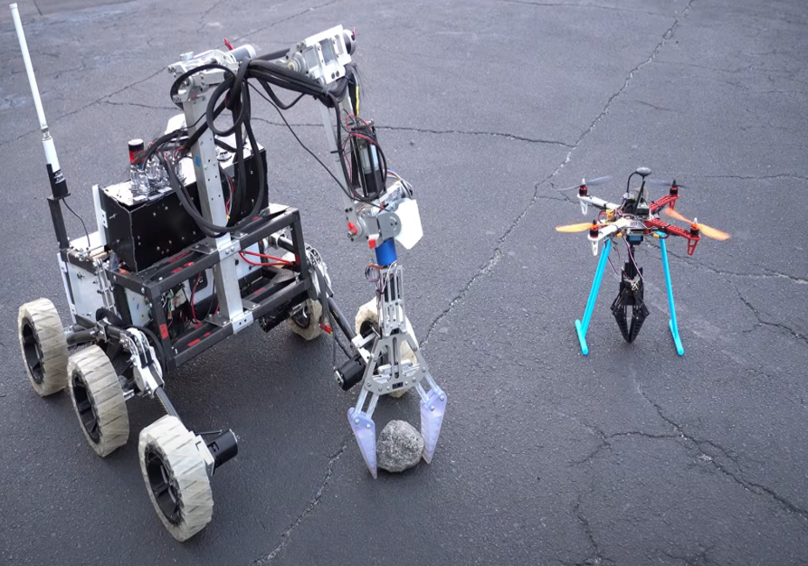
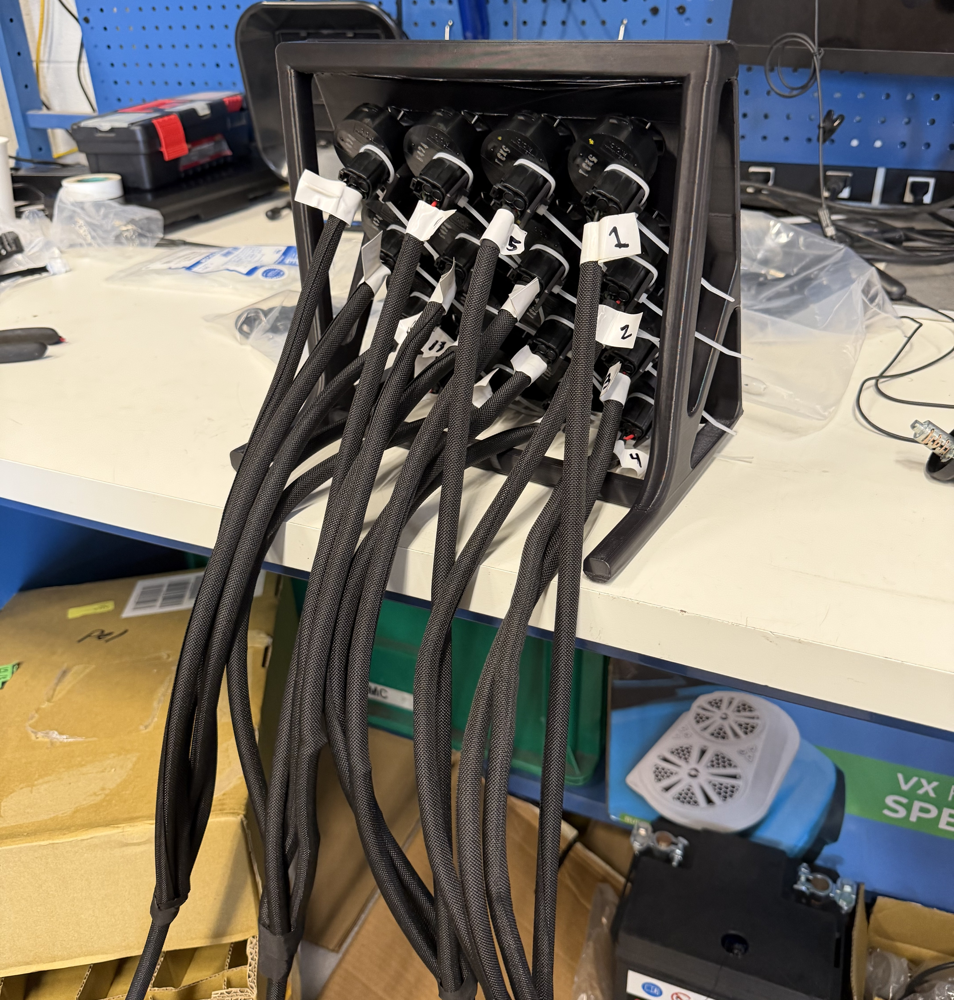

Automatic Parking Brake @ Yamaha
Developed and validated automatic parking brake control logic using Arduino-based controls, custom motor control hardware, vehicle inputs, and mechanical actuation through bench and vehicle testing.
Mechanical engineering student building robotic, embedded, and autonomous systems.
See my work Download resume Visit LinkedInI’m an engineering student at Georgia Tech focused on mechanical engineering, automation, and robotics. I enjoy working at the intersection of mechanical design, electrical systems, and software, especially when I can take an idea from a concept or CAD model to a working prototype.
Through my experience with Yamaha Motor Manufacturing, RoboJackets, and robotics projects, I’ve worked on everything from embedded controls and electrical hardware to CAD, prototyping, testing, and system integration. I especially enjoy the problem-solving that happens when a design doesn't work the first time and I have to figure out why.
My goal is to build a career developing robotic and autonomous systems that combine mechanical, electrical, and software engineering. This portfolio highlights some of the projects and experiences that have shaped the way I approach engineering.
LinkedIn: www.linkedin.com/in/elizabeth-pierburg

Developed and validated automatic parking brake control logic using Arduino-based controls, custom motor control hardware, vehicle inputs, and mechanical actuation through bench and vehicle testing.

Contributed to mechanical and system integration of an autonomous mobile robot, including platform to body mounting design, NVIDIA Jetson hardware communication, ROS motion planning, and rocker pedal development.

Created 100+ Python-based automated test cases for infotainment system validation across three different vehicles, reducing repetitive manual verification and streamlining the testing process.

Led the science subsystem for a Mars-style rover, testing soil to evaluarte signs of life while mentoring and onboarding 50+ new members.

Investigated recurring vehicle electrical failures through testing and root-cause analysis of battery and main switch systems, identifying electrical and corrosion-related isssues and improving system reliability.
I’m always happy to connect about robotics, embedded systems, and mechanical design.